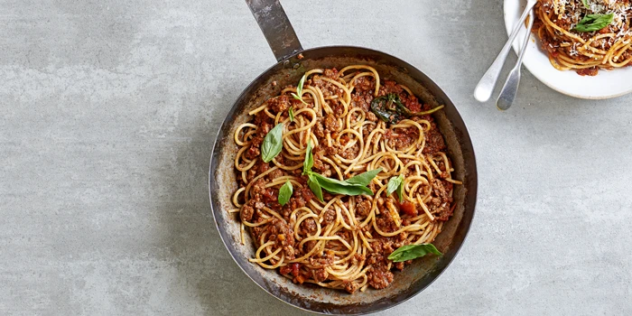

Home
Home made Bolognese sauce

Description:
Actual cherry coke is crap, but you can make the most wonderful drink with coke zero and real dark cherries!
Ingredients
- 500g Tomato paste
- One Onion
- Two garlic cloves
- 250g vegetarian mince
- Salt
- Pepper
- Garlic Powder
- Rosemary
Steps
- Stir fry Onion, garlic and mince
- Add tomato sauce, 1 cup of water
- Add Salt, pepper, garlic powder and rosemary
- Slow cook for 2 hours
- Enjoy!